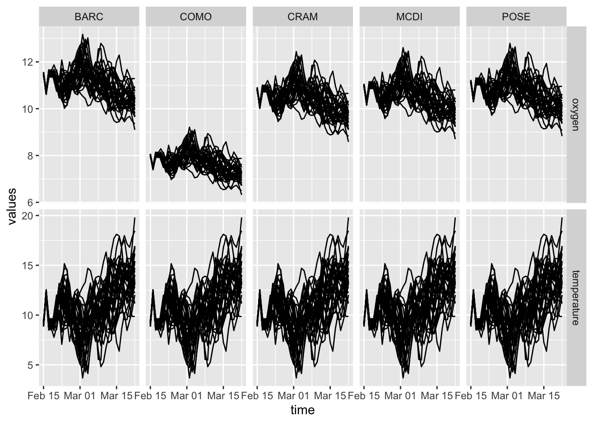

12 Example Forecast Workflow
Here is an example of a complete workflow for generating a forecast submission to the Challenge. The example is for the aquatics theme and it forecasts water temperature and oxygen. The water temperature forecast uses a linear regression between air temperature and water temperature to predict water temperature in the future. It then uses the prediction of water temperature to predict oxygen water oxygen concentration by assuming that the oxygen is 100% saturated given the predicted temperature.
To generate the forecast we need to:
1) Build a relationship between past air temperature and past water temperature.
2) Apply the relationships from #1 to forecasted air temperature.
3) Calculate oxygen concentration from the forecasted water temperature.
Therefore we need to:
1) Download the historical water temperature data for the NEON sites (called “targets”).
2) Download historical air temperature data for the NEON sites (we the stacked NOAA GEFS weather).
3) Download NOAA weather forecast for the NEON sites.
4) Create linear regression model based on historical data for each NEON site.
5) Apply linear regression to using weather forecasts for each NEON.
6) Write forecast output file.
7) Correct metadata describing forecast.
8) Submit forecast to Challenge.
Each of these steps are below
12.1 Step 0: Set up R environment and directories
We will be downloading NOAA forecasts from the Challenge s3 bucket and submitting to the s3 bucket. Therefore the AWS information is needed.
library(tidyverse)## ── Attaching packages ─────────────────────────────────────── tidyverse 1.3.1 ──## ✔ ggplot2 3.3.5 ✔ purrr 0.3.4
## ✔ tibble 3.1.6 ✔ dplyr 1.0.8
## ✔ tidyr 1.2.0 ✔ stringr 1.4.0
## ✔ readr 2.1.2 ✔ forcats 0.5.1## ── Conflicts ────────────────────────────────────────── tidyverse_conflicts() ──
## ✖ dplyr::filter() masks stats::filter()
## ✖ dplyr::lag() masks stats::lag()library(neon4cast)
library(lubridate)##
## Attaching package: 'lubridate'## The following objects are masked from 'package:base':
##
## date, intersect, setdiff, unionlibrary(rMR)## Loading required package: biglm## Loading required package: DBI#library(EFIstandards)
Sys.setenv("AWS_DEFAULT_REGION" = "data",
"AWS_S3_ENDPOINT" = "ecoforecast.org")
dir.create("drivers", showWarnings = FALSE)Define the date that the forecast starts. For demonstration purposes, we are setting the date to 2022-02-15. In a real-time application, use forecast_date <- Sys.Date()
forecast_date <- lubridate::as_date("2022-02-15") 12.2 Step 0: Define team name and team members
team_name <- "air2waterSat"
team_list <- list(list(individualName = list(givenName = "Quinn",
surName = "Thomas"),
organizationName = "Virginia Tech",
electronicMailAddress = "rqthomas@vt.edu"))12.3 Step 1: Download latest target data and site description data
These targets are updated when new data is available from NEON.
target <- readr::read_csv("https://data.ecoforecast.org/targets/aquatics/aquatics-targets.csv.gz", guess_max = 1e6)## Rows: 9763 Columns: 10
## ── Column specification ────────────────────────────────────────────────────────
## Delimiter: ","
## chr (1): siteID
## dbl (8): oxygen, temperature, chla, oxygen_sd, temperature_sd, chla_sd, dep...
## date (1): time
##
## ℹ Use `spec()` to retrieve the full column specification for this data.
## ℹ Specify the column types or set `show_col_types = FALSE` to quiet this message.A table is available with NEON site descriptions. The calculation of oxygen saturation requires the elevation of each site, which is included in the site description table.
site_data <- readr::read_csv("https://raw.githubusercontent.com/eco4cast/neon4cast-aquatics/master/Aquatic_NEON_Field_Site_Metadata_20210928.csv")## Rows: 5 Columns: 46
## ── Column specification ────────────────────────────────────────────────────────
## Delimiter: ","
## chr (22): field_domain_id, field_site_id, field_site_name, field_site_type, ...
## dbl (10): field_latitude, field_longitude, field_utm_northing, field_utm_eas...
## lgl (14): field_minimum_elevation_m, field_maximum_elevation_m, field_domina...
##
## ℹ Use `spec()` to retrieve the full column specification for this data.
## ℹ Specify the column types or set `show_col_types = FALSE` to quiet this message.12.4 Step 2: Get drivers
12.4.1 Step 2.1: Download Paste NOAA forecast stacked together
To build the relations between air and water temperature, we need historical air temperature data to associate with historical water temperature data. Here we use a product that the Challenge organizers created that combines day 1 NOAA weather forecasts (i.e., when the forecasts are most accurate) together to generate an estimate of past weather. He we download this “stack” NOAA product for the set of NEON sites in the targets file.
sites <- unique(target$siteID)
for(i in 1:length(sites)){
neon4cast::get_stacked_noaa_s3(".",site = sites[i], averaged = FALSE)
}12.4.2 Step 2.2: Download NOAA future forecast
We need NOAA Weather forecasts of the future. Fortunately, the Challenge organizers are downloading and subsetting the weather forecasts for each NEON site. Here we download the weather forecast (date = forecast_date) that started at mid-night UTC (cycle=00) for the set of sites in the target file.
sites <- unique(target$siteID)
for(i in 1:length(sites)){
neon4cast::get_noaa_forecast_s3(".",model = "NOAAGEFS_1hr", site = sites[i], date = forecast_date, cycle = "00")
}12.4.3 Step 2.3 Create data frames of drivers
The NOAA stacked and forecast files are netcdf files. Here we convert to data frames to used in our analyses.
noaa_past <- neon4cast::stack_noaa(dir = "drivers", model = "NOAAGEFS_1hr_stacked")
noaa_future <- neon4cast::stack_noaa(dir = "drivers", model = "NOAAGEFS_1hr", forecast_date = forecast_date)12.4.4 Step 2.4 Aggregate (to day) and convert units of drivers
Since we are forecasting daily mean water temperature and oxygen, we need to aggregate the 1 hr weather data to the daily time-scale. We also need to convert from Kelvin to Celsius.
noaa_past_mean <- noaa_past %>%
mutate(date = as_date(time)) %>%
group_by(date) %>%
summarize(air_temperature = mean(air_temperature, na.rm = TRUE), .groups = "drop") %>%
rename(time = date) %>%
mutate(air_temperature = air_temperature - 273.15)For the future weather has 31 ensemble members (i.e., different trajectories of weather), that we want to use to generate uncertainty in our water temperature and oxygen forecasts. The aggregation below maintains the separate ensemble members (group_by(date, ensemble)).
noaa_future_mean <- noaa_future %>%
mutate(date = as_date(time)) %>%
group_by(date, ensemble) %>%
summarize(air_temperature = mean(air_temperature, na.rm = TRUE), .groups = "drop") %>%
rename(time = date) %>%
mutate(ensemble = as.numeric(stringr::str_sub(ensemble, start = 4, end = 6)),
air_temperature = air_temperature - 273.15)12.4.5 Step 2.5: Merge in past NOAA data into the targets file, matching by date.
Before building our linear model we need merge in the historical air temperature to match with the historical water temperature
target <- left_join(target, noaa_past_mean, by = "time")12.5 Step 3.0: Generate forecasts for each site
We generate a forecast for each site.
forecast <- NULL
for(i in 1:length(sites)){
# Get site information for elevation
site_info <- site_data %>% filter(field_site_id == sites[i])
#Fit linear model based on past data: water temperature = m * air temperature + b
fit <- lm(target$temperature~target$air_temperature)
#use linear regression to forecast water temperature for each ensemble member
forecasted_temperature <- fit$coefficients[1] + fit$coefficients[2] * noaa_future_mean$air_temperature
#use forecasted temperature to predict oxygen by assuming that oxygen is saturated.
forecasted_oxygen <- rMR::Eq.Ox.conc(forecasted_temperature, elevation.m = ,site_info$field_mean_elevation_m,
bar.press = NULL,
bar.units = NULL,
out.DO.meas = "mg/L",
salinity = 0,
salinity.units = "pp.thou")
#Build site level dataframe. Note we are not forecasting chla
site_forecast <- tibble(time = noaa_future_mean$time,
siteID = sites[i],
ensemble = noaa_future_mean$ensemble,
forecast = 1,
temperature = forecasted_temperature,
oxygen = forecasted_oxygen,
chla = NA)
#Bind with other sites
forecast <- bind_rows(forecast, site_forecast)
}Use ggplot to visualize the forecast for each variable and site. The spread in forecast is due to uncertainty in the weather forecast, where each line is associated with a different NOAA GEFS weather forecast ensemble member.
forecast %>%
select(-chla) %>%
pivot_longer(cols = c("temperature","oxygen"), names_to = "variable", values_to = "values") %>%
ggplot(aes(x = time, y = values, group = ensemble)) +
geom_line() +
facet_grid(variable~siteID, scale ="free")
Forecast output file name in standards requires for Challenge. “csv.gz” means that it will be compressed
forecast_file <- paste0("aquatics","-",min(forecast$time),"-",team_name,".csv.gz")Write csv to disk
write_csv(forecast, forecast_file)Confirm that output file meets standard for Challenge
neon4cast::forecast_output_validator(forecast_file)12.6 Step 4: Generate metadata
First we need to create a “list” in R that describes the forecast model. We only have one source of uncertainty (driver). It is propagated (i.e., represented in the forecasted output) using 31 ensemble members.
model_metadata = list(
forecast = list(
model_description = list(
forecast_model_id = "air2waterSat", #What goes here
name = "Air temperature to water temperature linear regression plus assume saturated oxygen",
type = "empirical",
repository = "https://github.com/rqthomas/neon4cast-example"
),
initial_conditions = list(
status = "absent"
),
drivers = list(
status = "propagates",
complexity = 1, #Just temperature
propagation = list(
type = "ensemble",
size = 31)
),
parameters = list(
status = "absent"
),
random_effects = list(
status = "absent"
),
process_error = list(
status = "absent"
),
obs_error = list(
status = "absent"
)
)
)Using the team_list and model_metadata above, we can create the metadata file. The function neon4cast::generate_metadata adds additional information to complete the metadata (i.e., geographic information about the site, etc.)
metadata_file <- neon4cast::generate_metadata(forecast_file, team_list, model_metadata)12.7 Step 5: Submit forecast!
Now we can submit the forecast output and the metadata file to the Challenge using the neon4cast::submit() function
neon4cast::submit(forecast_file = forecast_file,
metadata = metadata_file,
ask = FALSE)You can check on the status of your submission using
neon4cast::check_submission(forecast_file)On following day after submission, you can see the forecast on the dashboard at shiny.ecoforecast.org
12.8 Example on github
The example code above can be found on GitHub as a template repository at [https://github.com/eco4cast/neon4cast-example.git]. See the Readme for more information about using the template